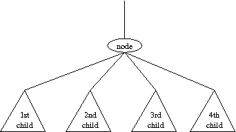

| Topic: | Tree Grafting |
| Source Code: | graft.cpp |
| Test files: | Sample input file Sample output file |
| Live Archive Ref#: | 3821 |
|
In-Class Day: |
Thursday, November 5, 2009 |
| Submission Deadline: | Sunday, November 8, 2009, 11:59pm |
|
Techniques: |
Recursion, Tree traversals |
Please review the general information about lab assignments.
Trees have many applications in computer science. Perhaps the most commonly used trees are rooted binary trees, but there are other types of rooted trees that may be useful as well. One example is ordered trees, in which the subtrees for any given node are ordered. The number of children of each node is variable, and there is no limit on the number. Formally, an ordered tree consists of a finite set of nodes T such that
It is often more convenient to represent an ordered tree as a rooted binary tree, so that each node can be stored in the same amount of memory. The conversion is performed by the following steps:
This is illustrated by the following:
0 0
/ | \ /
1 2 3 ===> 1
/ \ \
4 5 2
/ \
4 3
\
5
You are asked to write a program that computes the height of the tree before and after the conversion.
| Example input: | Example output: |
|
dudduduudu ddddduuuuu dddduduuuu dddduuduuu # |
Tree 1: 2 => 4 Tree 2: 5 => 5 Tree 3: 4 => 5 Tree 4: 4 => 4 |
Upon first glance, this problem seems like it's going to require you to build a tree data structure and then implement the conversion from the general tree to the binary tree. But as is the case with many of these contest problems, there's a much easier way.
It is possible to compute the resulting depths without ever building
the trees. We suggest a recursive approach. In the end we want a
function that can compute the depth of the entire tree; we will
design a recursion that computes the depth of any subtree. Consider
the following local view:

If you were told the traditional depths for each of the four children,
can you compute the traditional depth of the larger subtree?
Consider the "converted" case. If you were told the "converted" depth
for each of the four children, can you determine the converted depth
for the larger subtree?
Here is how we recommend setting up the recursion. Remember that the original input is just a sequence of 'd' and 'u' designators to describe the shape of the tree. We want to think about starting the recursion at the root. Technically, there is no 'd'/'u' pair in the input for going down to the root up up from it, but for consistency sake, we recommend that you alter the original input string by adding a preceding 'd' and a trailing 'u'. Then use a string iterator to implicitly traverse the tree as you do your computation. Use the following signature.
int depth(string::iterator& i, bool converted = false);Assume that the function is called at a time when the iterator is pointing to the initial 'd' that moves down to a node. This call is supposed to compute the original (resp. converted) depth of the subtree at that node, and while doing so it should advance the iterator so that it is one spot past the final 'u' that designates moving back up from the given node (note that we pass the iterator as a non-const reference so that the caller will continue scanning after the characters that we've processed).
Finally, we've suggested a signature that computes the traditional depth by default, but can be changed to compute the "converted" depth by sending a second parameter. Although we could have given two different functions for the two different depths, we are suggesting a single function because there is really only a one or two line difference between the two computations. Still, we recommend that you start by implementing the traditional depth version. Then you can go back and do the converted depth. Note that you will make two separate calls from the main routine, and you will need to reinitialize the iterator to the beginning of the string for the second computation.